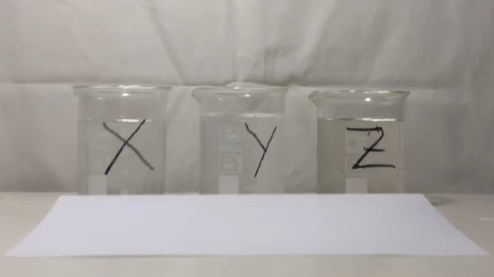
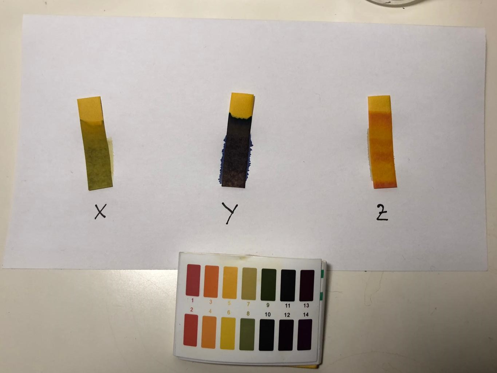
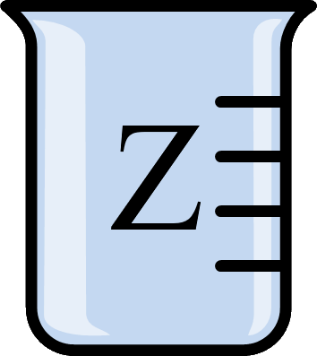
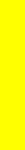
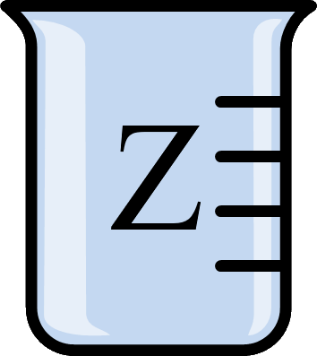
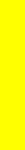

Uzdevums Nr. 1
Sveicināts/-a TARA prototipā!
Šodien centīsimies praktiski apskatīt pH indikatorus un to pielietojumu šķīdumu pH līmeņa noteikšanai.
Iepakojuma kastē atradīsi drošības brilles un cimdus, trīs vārglāzes ar ūdeni, NaOH šķīdumu un CH3COOH šķīdumu, trīs universālindikatora papīrīšus un pH krāsu skalu.
NB! Pirms eksperimenta veikšanas uzvelc brilles un cimdus, lai pasargātu sevi no kaitīgu vielu ietekmes.
Tavs pirmais uzdevums ir izkārtot vārglāzes uz galda līdzīgi tam, kā ir attēlots bildē.
(mērglāžu bildes jāpārvelk uz melnajām kastītēm brīvi izvēlētā kārtībā)

Kad vārglāzes saliktas, droši spied "Nākamais Uzdevums"!
Uzdevums Nr. 2
Tagad tev būs iespēja novērot indikatorus darbībā.
Paņem indikatora papīrīti, daļēji iemērc to mērglāzē un izvelc to ārā, noliekot to uz papīra salvetes. Uzreiz pamanīsi, ka papīrīša krāsa sāk mainīties.
(papīrīšu bildes jāpārvelk uz melnajām kastītēm brīvi izvēlētā kārtībā)
Video demonstrācija:
Kad visās mērglāzēs ir iemērkts pa indikatora papīrītim, dodies uz nākamo uzdevumu!
Uzdevums Nr. 3
Palikusi vēl tikai finiša taisne. Tā tik turpināt!
Izmantojot pH krāsu skalu, nosaki katra šķīduma pH un izpildi testu!

Praktiskajam uzdevumam nepieciešamie trauki un vielas: 3 vārglāzītes, 3 šķīdumi X,Y,Z (viens satur no NaOH šķīdumu, otrs CH3COOH, un trešais ir ūdens), univerālindikatora papīrīši.
pH ir negatīvais decimāllogaritms no ūdeņraža jonu koncentrācijas. Šo mērvienību lieto, lai noteiktu šķīdumu skābumu vai bāziskumu.
pH = -lg([H+])
Indikatori ir dažādas organiskas vielas, kas ir spējīgas mainīt krāsu atkarībā no vides pH. Piemēram, šajā darbā izmantotais universālindikators ir dažādu indikatoru (fenolftaleīna, metilsarkanā, bromtimolzilā) maisījums, kas ļauj panākt pH noteikšanu daudz plašākā diapazonā (0-14), nekā ar atsevišķiem indikatoriem. Indikatoru darbības princips - indikators protolīzes dēļ var dažādās vidēs pastāvēt gan molekulārajā, gan jonu formā, kurām ir atšķirīgas krāsas.
- Sarkanā kāposta ekstrakts, kas satur antociānu pigmentus, var kalpot kā dabiskais indikators un darbojas līdzīgi kā universālindikators.
- Šāda vides pH mērīšana ir iespējama tikai kvalitatīviem nolūkiem un ar bezkrāsaniem šķīdumiem, taču daudz precīzākus pH mērījumus var panākt ar instrumentālām metodēm (pH-metriem).
- pH diapazons 0-14 ir lietojams tikai ūdens šķīdumiem, taču dažādos organiskajos šķīdinātājos (benzolā, dihlormetānā) šī skala ir daudz plašāka, kas ļauj noteikt pH līdz pat -100 līdz 100 vienību robežās.
- Fluorantimonskābe ir stiprākā superskābe pasaulē (aptuveni 2 * 10^19 reizes stiprāka par 100% H2SO4, pH skalā tas būtu tuvu pie pH=-31)
- orto-Dietilbenzola dianjons ir šobrīrd zināmā spēcīgākā superbāze pasaulē
- Šobrīd plaši lietoto konceptu par pH skalu un skābumu/baziskumu ūdens šķīdumiem 1909. gadā izveodijis dāņu ķīmiķis Søren Sørensen (1868-1939)
- Vissenākais zināmais pH indikators ir no ķērpjiem iegūtstamais lakmuss, ko plaši lietoja jau 14. gadsmintā, novērojot tā dažādās krāsas - skābā vidē sarkans, bāziskā - zils.
 


